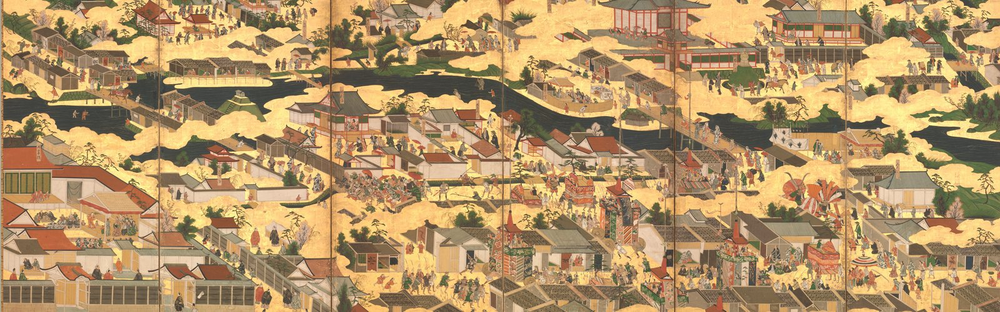

What is the PrinterMan's Art Club?
Good question! At first I had an iFunny account in which I began posting art around themes. As I grew a decent following, I thought it good to separate from the platform to keep things organized. So, I created the Discord server “PrinterMan's Art Club” in late February of 2026 as a central place for everyone to hang out. We've been thriving ever since!
What's the purpose of this website?
This website is intended as a way to draw new people into the community - but more than that it's a collaboration project for everyone from the Discord. Have ideas to make things more fun and exciting? Join and share your thoughts.
What are the rules of the Discord server?
We have a few simple guidelines to keep people safe and ensure everyone has a great time. Just 4 broad rules actually: (1) don't be rude or annoying, (2) don't doxx people, or share personal non-public information without consent, (3) post mature content in the right channel, (4) public advertising is only allowed after admin approval.
What does the server do for fun?
We do all kinds of fun activities, including playing games (Minecraft, Dead by Daylight, Halo, etc…), sharing memes, posting our art, and watching movies. We would love for you to join the fun today. Consider joining and telling us what interests you have. We'll try to find ways to incorporate events that everyone will enjoy.
How do I join the community?
Press the join button in the corner of each page here or the big blue “Join Now” button on the home page. You'll be redirected to Discord. We have two short pre-join access questions for verification: Why do you want to join our server? How did you find us? There's no wrong answer to these per se, but putting intelligible answers tells me you're a human user and helps weed out bots and spam accounts. After an admin approves you, you're in! Feel free to introduce yourself and get to know the cool people (that's everyone).
Do I have to be an artist to join?
No, absolutely not. Our crowd is diverse. Some are gamers, students, or pet lovers. All kinds of interests thrive among members. Art brings us together, whether it's art appreciation or sharing our own creations.
What kind of art can I share?
Any art is fine! There's no preference for a particular genre or style. We have a channel for member art and another for art made by someone else. Try to credit the artists if possible. If your art is mature, post it in the “mature art” channel (Rule #3).
What's our take on AI art?
AI is a good tool for analyzing images to provide constructive feedback and can tweak some elements, but if you join and only post completely generative AI content, you won't be taken seriously. Don't be cringe.
Who runs the server?
I do! Contact the PrinterMan once you join if you have questions or concerns. We also have a wonderful staff of admin that help out.